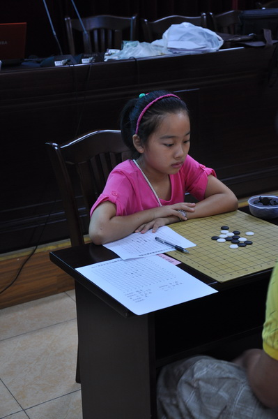

姓名：陆梦溪
籍贯：江苏南通
段（级）位：2011年8月由中国棋院授予二段棋手称号
个人战绩：
区级比赛：
2010年港闸区第四届中小学生五子棋比赛儿童女子组第16名
2011年港闸区第五届中小学生五子棋比赛儿童女子组第9名
2012年港闸区第六届中小学生五子棋比赛儿童女子组第4名
市级比赛：
2010年南通市第一届中小学生智力运动会儿童乙组女子第1名
2011年南通市第二届中小学生智力运动会儿童甲组女子第3名
2011年南通市第三届中小学生智力运动会儿童甲组女子第1名
全国比赛：
2010年8月全国第三届少年儿童五子棋锦标赛儿童女子组第11名
2011年7月全国第四届少年儿童五子棋锦标赛儿童女子组第1名
2012年7月全国第五届少年儿童五子棋锦标赛少年女子组第2名
哈哈 有印象耶……
不过 我俩生日 居然同一天 哈哈哈哈哈
引用：你和谁生日一天？？
原文由 超级天逸超人 发表于 2012-9-19 20:04:08 :哈哈 有印象耶……
不过 我俩生日 居然同一天 哈哈哈哈哈
我呀。。。。和陆梦溪童鞋呀。。。。虽然年份不一样吧。。。。
但是我和 李振宇 童鞋是同年同月同日生的。。。。。。
引用：
原文由 超级天逸超人 发表于 2012-9-21 22:40:33 :我呀。。。。和陆梦溪童鞋呀。。。。虽然年份不一样吧。。。。
但是我和 李振宇 童鞋是同年同月同日生的。。。。。。
你知道她的生日？